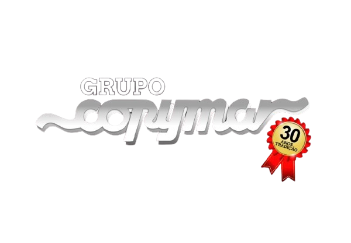
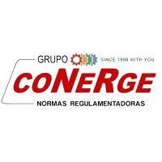

Experiências
fev/2022 (atual)

Técnico eletrônico
Manutenção em impressoras multifuncionais, instalação de softwares e visita técnica
nov/202 - jan/2022

Assistente de engenharia
Auditoria e Laudos nas normas NR-10 e NR-12
abr/2018 - ago/2020
Auxiliar técnico de informática
Suporte em equipamentos de informática e Windows
mai/2013 - fev/2018
Auxiliar técnico de manutenção
Manutenção em impressoras multifuncionais, instalação de softwares e visita técnica
jan/2011 - dez/2012
Aprendiz de manutenção elétrica
Suporte em manutenção em equipamentos elétricos e automação industrial